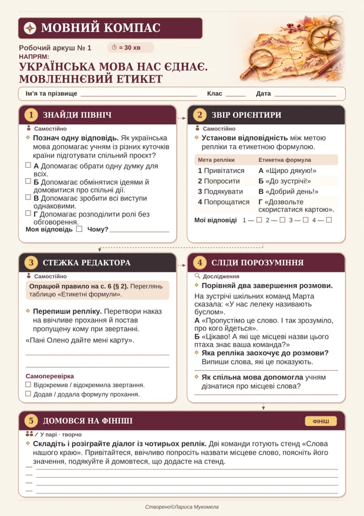
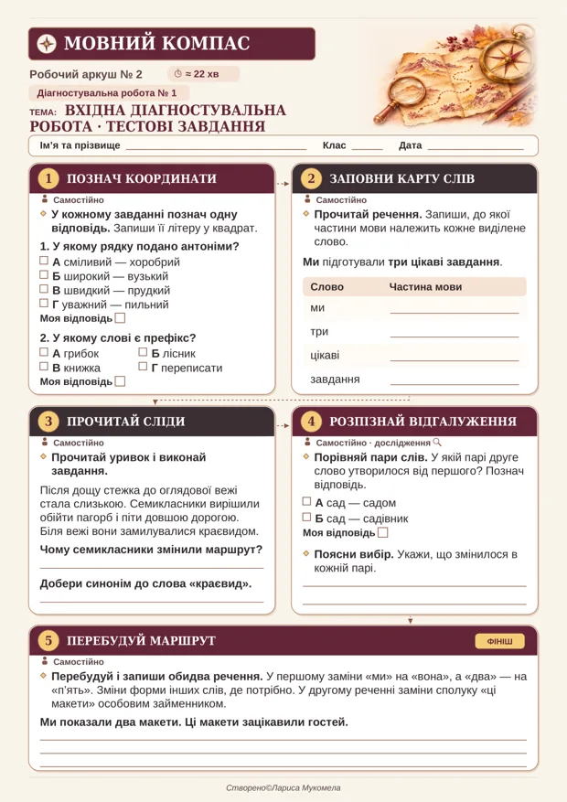
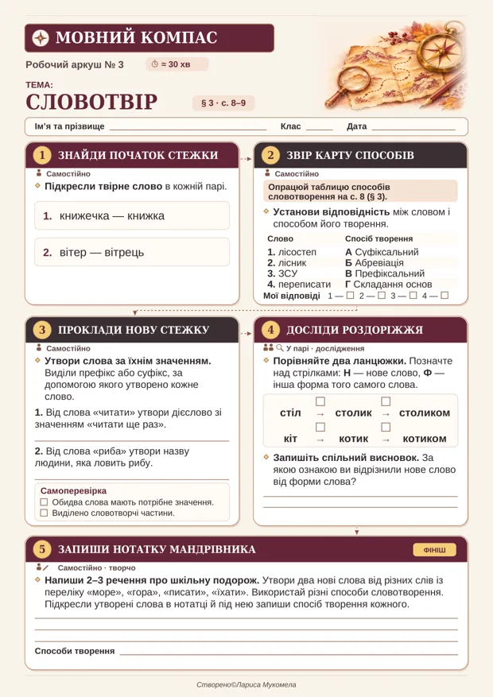
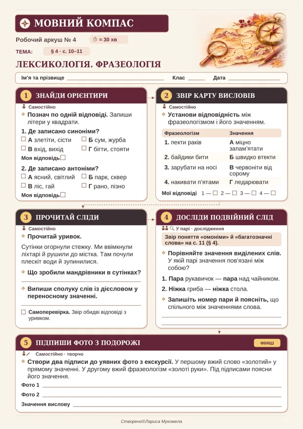
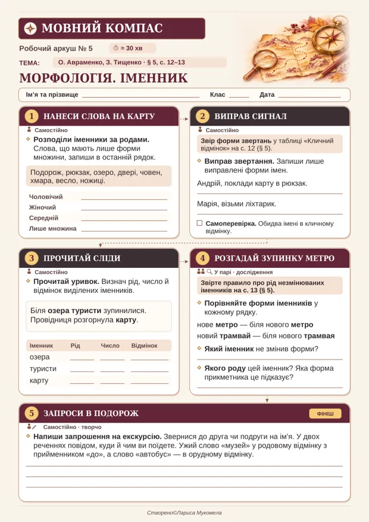
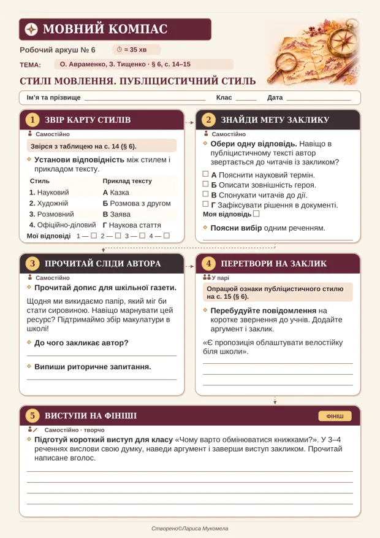
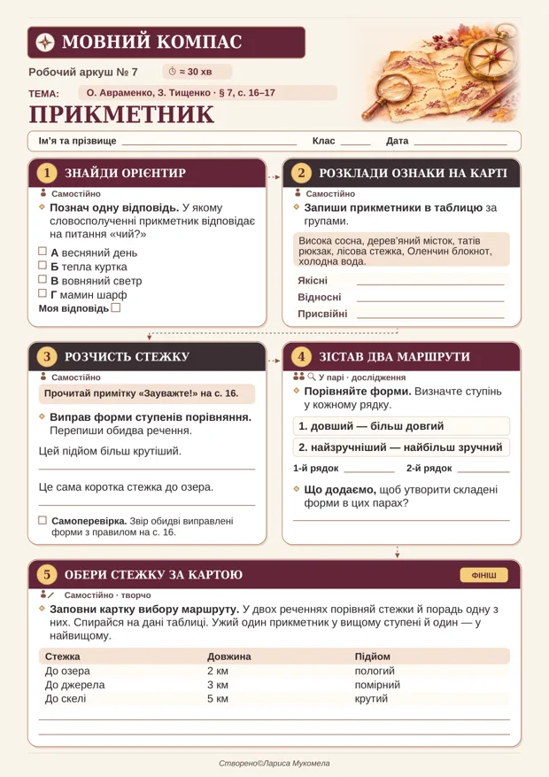
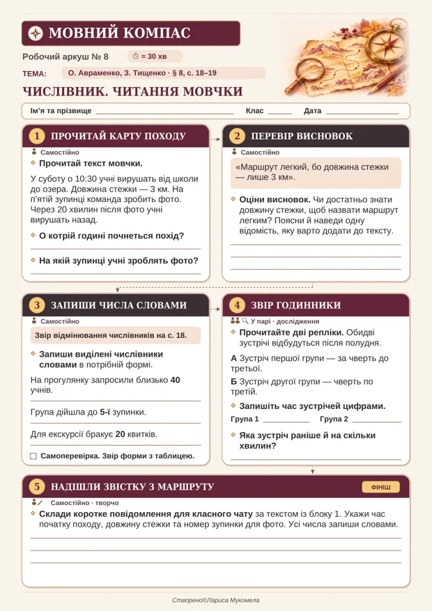
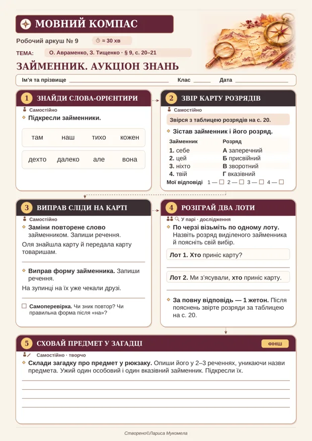

Мовний компас · № 1–9
Вступ. Повторення
Учнівських аркушів: 9 · Матеріалів для вчителя: 0. Оригінальні PNG для друку.
Архів міститиме аркуші для учнів і наявні матеріали для вчителя. Дочекайтеся завершення підготовки.

Аркуш № 1 · 7 класУкраїнська мова нас єднає. Мовленнєвий етикет

Аркуш № 2 · 7 класВхідна діагностувальна робота. Тестові завдання

Аркуш № 3 · 7 класСловотвір

Аркуш № 4 · 7 класЛексикологія. Фразеологія

Аркуш № 5 · 7 класМорфологія. Іменник

Аркуш № 6 · 7 класСтилі мовлення. Публіцистичний стиль

Аркуш № 7 · 7 класПрикметник

Аркуш № 8 · 7 класЧислівник. Читання мовчки

Аркуш № 9 · 7 класЗайменник. Аукціон знань